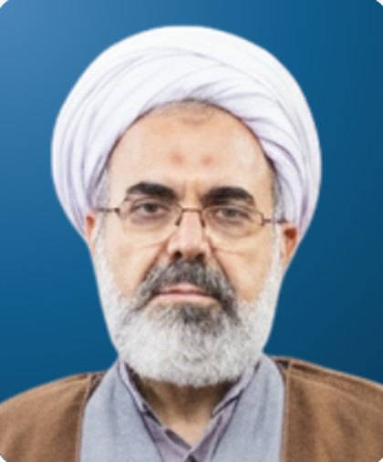
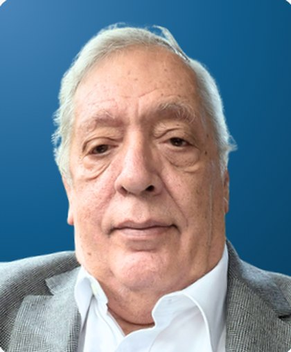

From Fasād to Iṣlāḥ: Islamic Thought and Ethics for a Regenerative Civilization
From corruption and ruin toward repair and renewal
The Faculty of Ushuluddin and Islamic Thought, UIN Sunan Kalijaga Yogyakarta, invites scholars, researchers, postgraduate students, and practitioners to the 9th Ushuluddin International Conference (USICON), held on November 10–11, 2026, at the Convention Hall of UIN Sunan Kalijaga Yogyakarta.
Our world is marked by ecological disasters, eroding public trust, violence against human dignity, economic inequality, and the growing power of algorithms over what people know and believe. This year's theme asks how Islamic thought and ethics can name these forms of fasād and shape practices of iṣlāḥ that heal, rebuild, and renew, toward a civilization that regenerates rather than depletes.
Papers are welcome from the Qur'anic and Prophetic sciences, theology, philosophy, Sufism, comparative religion, and the social sciences, as long as they engage one of the eight sub-themes.
Fasād فساد
Corruption, decay, and disorder, in the earth, in institutions, and in the human self.
Iṣlāḥ إصلاح
Repair, reconciliation, and reform: the ethical work of restoring what has been damaged.
Sub-themes
Submit a paper addressing one of the following eight sub-themes.
Fasād and Iṣlāḥ in Qur'anic and Prophetic Thought
Hermeneutics, Ethics, and Social Transformation
Islamic Environmental Ethics
Eco-Theology, Disasters, and Human Responsibility
Islamic Political Ethics
Authority, Public Trust, Corruption, and Institutional Iṣlāḥ
Islamic Moral Economy
Consumerism, Inequality, and the Ethics of Economic Iṣlāḥ
Artificial Intelligence and Islamic Epistemology
Algorithms, Knowledge, Truth, and Human Agency
Human Dignity and Islamic Ethics
Gender, Bodily Integrity, Violence, and Social Repair
Sufism, Spirituality, and Ethical Transformation
Healing, Resilience, and Practices of Iṣlāḥ
Interreligious Ethics and Civilizational Futures
Dialogue, Social Reconstruction, and Regenerative Imagination
Speakers

Prof. Mohammad Sharifani, Ph.D.
Allameh Tabataba'i University, Tehran, Iran & Director of Islamic Cultural Center (ICC)
Read profile →
Assoc. Prof. Mark Woodward, Ph.D.
Arizona State University, United States of America
Read profile →